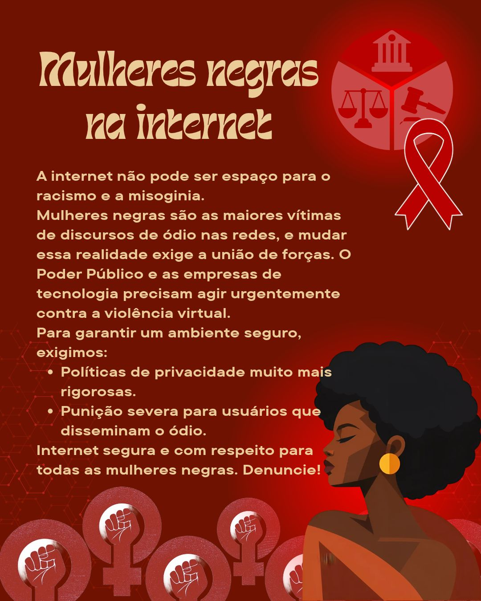

20 DE NOVEMBRO · DIA DA CONSCIÊNCIA NEGRA
Mulheres negras na internet.
Vozes, histórias e conquistas que transformam o mundo digital. A representatividade importa e o respeito deve estar presente em todos os espaços.
Conheça o projeto ↓Representatividade, respeito e igualdade.
Todas as mulheres têm o direito de ocupar espaços e ter suas vozes respeitadas.
01 / REPRESENTATIVIDADE
Um espaço para todas as vozes.
A internet se tornou um dos principais meios de comunicação, informação e expressão da sociedade.
Nesse ambiente, mulheres negras conquistam espaço como criadoras de conteúdo, jornalistas, influenciadoras, empreendedoras e profissionais da tecnologia.
Sua presença é importante porque amplia referências, fortalece identidades e combate a invisibilidade histórica.
02 / GALERIA
Vozes que merecem ser ouvidas.
Imagens e mensagens sobre a valorização das mulheres negras no ambiente digital.

Mulheres negras na internet
Conscientização contra o racismo, a misoginia e a violência virtual.
Segunda imagem
Foto a ser adicionada.
Representatividade importa
Mais visibilidade, reconhecimento e oportunidades.
03 / CONSCIENTIZAÇÃO
Internet com respeito. Sem racismo.
O racismo também está presente no ambiente digital. Mulheres negras podem sofrer ataques, comentários ofensivos, preconceito e discursos de ódio nas redes sociais.
Combater essa realidade é uma responsabilidade de toda a sociedade.
Como podemos ajudar?
- Não compartilhar mensagens racistas ou discriminatórias.
- Denunciar conteúdos de ódio nas plataformas.
- Respeitar a identidade e a cultura de cada pessoa.
- Valorizar mulheres negras e suas conquistas.
- Incentivar a igualdade e a inclusão digital.
UMA REFLEXÃO
Uma internet mais justa começa com respeito e atitude.
Mulheres negras têm o direito de ocupar todos os espaços, inclusive o digital, com liberdade, segurança e igualdade.
04 / SOBRE O PROJETO
Consciência Negra também é conhecimento.
Este site foi desenvolvido como parte de uma atividade da disciplina de Programação, relacionada ao Dia da Consciência Negra, celebrado em 20 de novembro.
O objetivo é apresentar informações sobre mulheres negras na internet, destacar a importância da representatividade e promover a conscientização sobre o racismo digital.